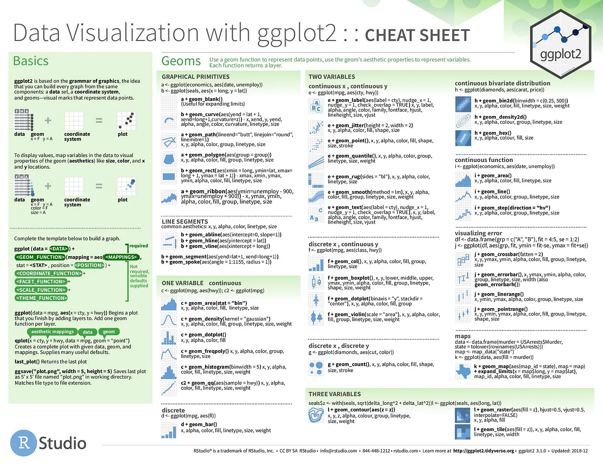
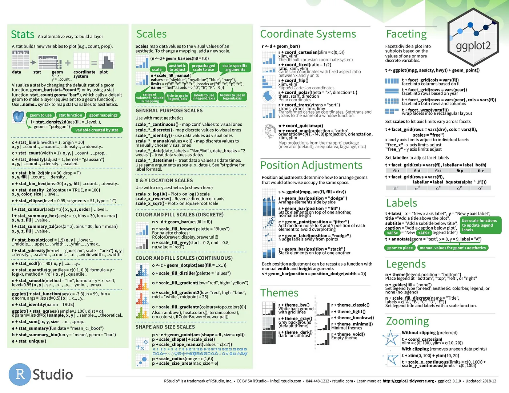
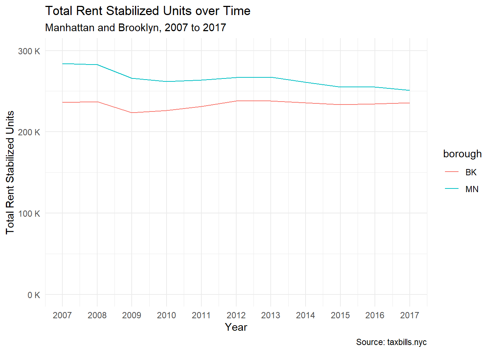
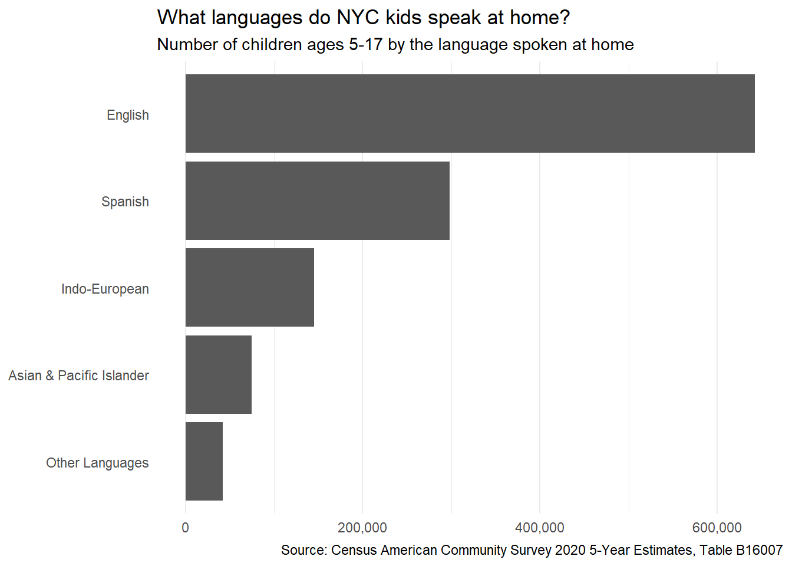
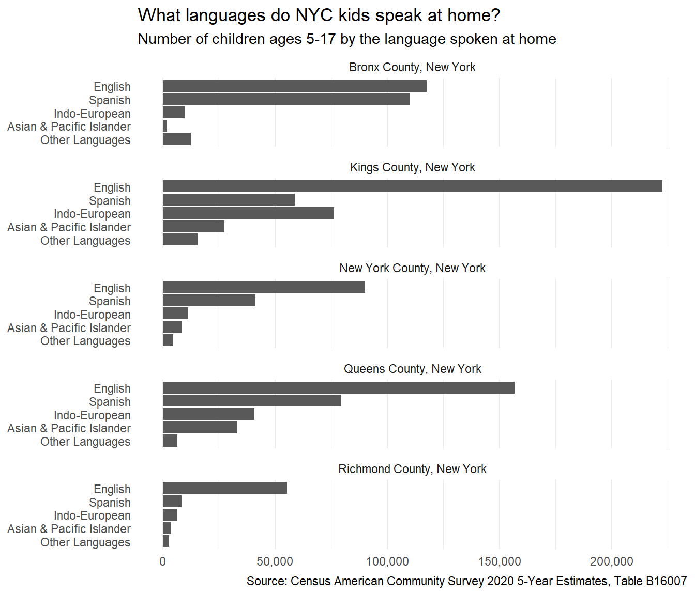

Data for ggplot needs to be in “long” format, meaning that all the values need to be in the same column and all the variables need to be in another column.
Let’s use that rent stabilization data to create a plot. In this case the data is wide by year, meaning there is a column for each year with different values. We want a dataset where each year has its own row - where each row is a year-building combination - that we can plot.
library(tidyverse)
Warning: package 'tidyverse' was built under R version 4.1.3
Warning: package 'ggplot2' was built under R version 4.1.3
Warning: package 'tibble' was built under R version 4.1.3
Warning: package 'tidyr' was built under R version 4.1.3
Warning: package 'readr' was built under R version 4.1.3
Warning: package 'purrr' was built under R version 4.1.3
Warning: package 'dplyr' was built under R version 4.1.3
Warning: package 'stringr' was built under R version 4.1.3
Warning: package 'forcats' was built under R version 4.1.3
Warning: package 'lubridate' was built under R version 4.1.3
-- Attaching core tidyverse packages ------------------------ tidyverse 2.0.0 --
v dplyr 1.1.2 v readr 2.1.4
v forcats 1.0.0 v stringr 1.5.0
v ggplot2 3.4.2 v tibble 3.2.1
v lubridate 1.9.2 v tidyr 1.3.0
v purrr 1.0.1
-- Conflicts ------------------------------------------ tidyverse_conflicts() --
x dplyr::filter() masks stats::filter()
x dplyr::lag() masks stats::lag()
i Use the conflicted package (<http://conflicted.r-lib.org/>) to force all conflicts to become errors
rent_stab_long <-read_csv("https://taxbillsnyc.s3.amazonaws.com/joined.csv") %>%select(borough, ucbbl, ends_with("uc")) %>%pivot_longer(ends_with("uc"), # The multiple column names we want to mush into one columnnames_to ="year", # The title for the new column of names we're generatingvalues_to ="units"# The title for the new column of values we're generating )
Rows: 46461 Columns: 61
-- Column specification --------------------------------------------------------
Delimiter: ","
chr (27): borough, 2007est, 2008est, 2009est, 2009dhcr, 2009abat, 2010est, 2...
dbl (25): ucbbl, 2007uc, 2008uc, 2009uc, 2010uc, 2011uc, 2012uc, 2013uc, 201...
lgl (9): 2007dhcr, 2007abat, 2008dhcr, 2008abat, 2010dhcr, 2014dhcr, 2015dh...
i Use `spec()` to retrieve the full column specification for this data.
i Specify the column types or set `show_col_types = FALSE` to quiet this message.
ggplot syntax
ggplots use similar syntax to regular R operations - they are groups of functions beginning with ggplot(). Instead of the pipe, ggplot uses + between different functions to build layers on top of each other.
Typically, ggplot will start with ggplot(dataframe) + a geometric function like geom_col() and an aesthetics or aes argument that indicates which variables to plot.


After that, ggplot has a ton of options to specify the labels, scales, axes, themes, legends,and more. It’s best shown through examples
Sample Line Chart
Line charts are often a good fit for time-series data. Let’s summarize the long data by year and borough and count the number of units.
rs_long_manhattan_summary <- rent_stab_long %>%filter(borough %in%c("MN","BK") # Filter only Manhattan and Brooklyn values&!is.na(units)) %>%# Filter out null unit count valuesmutate(year =as.numeric(gsub("uc","", year))) %>%# Remove "uc" from year valuesselect(year, borough, units) %>%# Grouping by 2 columns means each row will have a unique pair of the two columns' values.# Our rows will look like: 2007 MN, 2007 BK, 2008 MN... group_by(year, borough) %>%summarise(total_units =sum(units))
`summarise()` has grouped output by 'year'. You can override using the
`.groups` argument.
Now let’s plot it. We start with the data, then add aesthetics, our chart type (line), axis specifications, and labels.
rs_over_time_graph <-ggplot(rs_long_manhattan_summary) +# Note these arguments inside 'geom_line' :geom_line(aes(x=year, y=total_units, color=borough)) +# Restyle the Y-axis labels: scale_y_continuous(limits =c(0,300000),labels = scales::unit_format(scale =1/1000, unit="K")) +scale_x_continuous(breaks =seq(2007, 2017, by =1))+# Restyle the Legend: scale_fill_discrete(name="Borough",breaks=c("BK", "MN"),labels=c("Brooklyn", "Manhattan")) +labs(title ="Total Rent Stabilized Units over Time",subtitle ="Manhattan and Brooklyn, 2007 to 2017",x ="Year",y ="Total Rent Stabilized Units",caption ="Source: taxbills.nyc" )+theme_minimal()rs_over_time_graph

Sample Bar Chart + Faceting
Let’s make some bar charts out of the table of # of children by the languages they speak at home by borough.
We’ll learn how we pulled this data in an upcoming lesson, but for now just install tidycensus and run this.
library(tidyverse)library(janitor)
Warning: package 'janitor' was built under R version 4.1.3
Attaching package: 'janitor'
The following objects are masked from 'package:stats':
chisq.test, fisher.test
# Request your own API key here: https://api.census.gov/data/key_signup.html# Install the API key:langs_by_boro_for_graphing <-read_csv("langs_by_boro.csv") %>%mutate(labels =# Add a new column with neat category labelscase_when( variable =='englishkids'~'English', variable =='spanishkids'~'Spanish', variable =='indoeurkids'~'Indo-European', variable =='apikids'~'Asian & Pacific Islander', variable =='otherkids'~'Other Languages' ),labels =fct_reorder(labels, estimate) ) %>%# Overwrite the variable column of langs_by_boro with a function that tells R to order the variable column by the estimate column when it gets plotted (like a sort). If I wanted it ordered in the other direction I would put estimate inside of desc().filter(variable !='totalkids')
Rows: 30 Columns: 5
-- Column specification --------------------------------------------------------
Delimiter: ","
chr (2): name, variable
dbl (3): geoid, estimate, moe
i Use `spec()` to retrieve the full column specification for this data.
i Specify the column types or set `show_col_types = FALSE` to quiet this message.
Produce a horizontal bar chart
# Note - this builds progressively; you can run all the code before any + sign as a step toward the final result.barchart <-ggplot(langs_by_boro_for_graphing) +aes(x = estimate, y = labels) +geom_col() +scale_x_continuous(labels = scales::comma) +# format count labels with commas and thousandstheme_minimal() +theme(panel.grid.major.y =element_blank()) +labs(title ='What languages do NYC kids speak at home?',subtitle ='Number of children ages 5-17 by the language spoken at home',x =NULL,y =NULL,caption ="Source: Census American Community Survey 2020 5-Year Estimates, Table B16007" )barchart

Now let’s facet it by borough
barchart +facet_wrap( ~ name, ncol =1)

This guide from the Urban Institute has a number of helpful tutorials for how to create a wide number of graphs with ggplot.